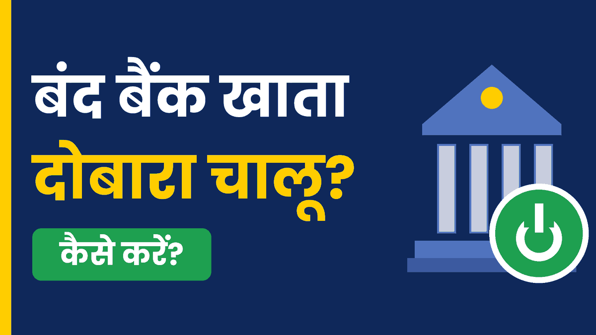

बैंक खाता बंद हो गया? घबराएं नहीं, ऐसे चालू कराएं।
यदि आप बैंक खाते में लम्बे समय तक किसी भी प्रकार का लेन-देन नहीं करते, तो बैंक आपके खाते को Inactive, Hold, Block और Frozen कर देती है। यदि आपका खाता भी बंद हो चुका है, तो इसमें परेशान होने की कोई जरूरत नहीं है। इस लेख में हम जानेंगे कि किन कारणों से बैंक खाता बंद होता है और बैंक खाते को फिर से सक्रिय कैसे करवाएं।

कचहरी या बैंक में किसी से लिखवाने की आवश्यकता नहीं है। अपना बैंक नाम, खाता संख्या और शाखा डालकर तुरंत आवेदन पत्र बनाएं:
1 मिनट में आवेदन पत्र तैयार करें 📄- बैंक खाता बंद (Inactive या Dormant) क्यों होता है?
- बंद खाता चालू कराने के लिए आवश्यक दस्तावेज (Documents Required)
- बंद बैंक खाते को दोबारा चालू करने की स्टेप-बाय-स्टेप प्रक्रिया
- क्या बंद खाता ऑनलाइन चालू किया जा सकता है?
- बंद खाता चालू करने के लिए एप्लीकेशन कैसे लिखें? (Sample Format)
- खाता दोबारा चालू होने में कितना समय और शुल्क लगता है?
- बंद बैंक खाते से जुड़े अक्सर पूछे जाने वाले सवाल (FAQs)
बैंक खाता बंद (Inactive या Dormant) क्यों होता है?
- 1 से 2 साल तक लेन-देन न होना: यदि हम अपने खाते से किसी भी प्रकार की राशि जमा और निकासी नहीं करते, तो उस दशा में खाता Inactive या Dormant हो जाता है।
- समय पर KYC अपडेट न होना: जब बैंक किसी प्रकार का अपडेट करती है तो बैंक अपने ग्राहकों के लिए KYC अनिवार्य कर देती है। यदि हम समय रहते अपने खाते की KYC प्रक्रिया पूरी नहीं करते, तो उस स्थिति में भी खाता बंद हो जाता है।
- Minimum Balance: बहुत सारी बैंकों में (₹500 या ₹1000) का Minimum Balance Maintain रखना होता है। यदि खाते में न्यूनतम बैलेंस नहीं होता, तो बार-बार खाते पर पेनल्टी लगने के कारण खाता Negative या फिर बंद हो जाता है।
- बैंक द्वारा खाता सस्पेंड करना: यदि खाते में किसी भी प्रकार की गैरकानूनी लेन-देन (Illegal Transactions) होती है, तो बैंक खाते को Block, Dormant या Frozen कर देती है।
बंद खाता चालू कराने के लिए आवश्यक दस्तावेज (Documents Required)
- 📄 आधार कार्ड की फोटोकॉपी
- 📄 पैन कार्ड की फोटोकॉपी
- 📱 मोबाइल नंबर (बैंक खाते से लिंक)
- 📖 बैंक पासबुक की फोटोकॉपी
- ✍️ बंद खाते को सक्रिय करने हेतु आवेदन पत्र
अपने बैंक और शाखा के अनुसार सही प्रारूप में आवेदन पत्र तुरंत जनरेट करें:
1 मिनट में आवेदन पत्र तैयार करें ⚡बंद बैंक खाते को दोबारा चालू करने की स्टेप-बाय-स्टेप प्रक्रिया
बैंक जाएं:
ऊपर बताए गए सारे दस्तावेज लेकर अपने बैंक की शाखा जाएँ।
फॉर्म लें:
बैंक अधिकारी से KYC फॉर्म या Account Activation Form मांगें। यदि बैंक में फॉर्म नहीं मिलता तो तैयार किया हुआ आवेदन इस्तेमाल करें।
फॉर्म भरें:
यदि KYC फॉर्म बैंक में मिला है तो उसमें अपनी जानकारी ध्यानपूर्वक दर्ज करें। न मिलने पर तैयार किए गए आवेदन फॉर्म में छूटी जानकारी जैसे दिनांक, मोबाइल नंबर और हस्ताक्षर भरें।
दस्तावेज संलग्न करें:
सारे दस्तावेजों की फोटोकॉपी आपस में संलग्न करें।
जमा करें:
खाते को सक्रिय करने वाले बैंक अधिकारी के काउंटर पर जाकर सारे दस्तावेज जमा करें। बैंक अधिकारी सारे दस्तावेजों को वेरीफाई करेगा और आवश्यकता होने पर आपकी उंगली का प्रमाणीकरण (Fingerprint/Biometric Authentication) भी कर सकता है।
क्या बंद खाता ऑनलाइन चालू किया जा सकता है?
बंद खाता ऑनलाइन चालू किया जा सकता है यदि खाता केवल Inactive हुआ है और बैंक ऑनलाइन केवाईसी (Video KYC / Net Banking KYC) की सर्विस देती है, तो उस दशा में आप बंद खाता चालू कर सकते हैं।
लेकिन ज्यादातर मामलों में नहीं। क्योंकि यदि आपका खाता डॉर्मेंट (Dormant), Frozen या पूरी तरह से बंद हुआ है, तो आपको स्वयं ही बैंक जाना पड़ेगा क्योंकि ऑनलाइन इस समस्या का समाधान नहीं होता।
बंद खाता चालू करने के लिए एप्लीकेशन कैसे लिखें? (Sample Format)
यदि बैंक में अलग से एक्टिवेशन फॉर्म न मिले, तो नीचे दिए गए प्रार्थना पत्र प्रारूप का उपयोग करें:
सेवा में, शाखा प्रबंधक (Branch Manager) [बैंक का नाम और अपनी ब्रांच का नाम लिखें] विषय: बंद पड़े बैंक खाते को दोबारा चालू (Activate) कराने के संबंध में। महोदय, सविनय निवेदन यह है कि मेरा नाम [आपका नाम] है और मेरा आपकी शाखा में एक बचत खाता (Savings Account) है, जिसका खाता संख्या (Account Number) [यहाँ अपना खाता नंबर लिखें] है। पिछले कुछ समय से लेन-देन न हो पाने के कारण मेरा यह खाता निष्क्रिय (Inactive/Dormant) हो गया है। मैं अपने इस खाते का दोबारा नियमित रूप से उपयोग करना चाहता हूँ। अतः आपसे विनम्र निवेदन है कि मेरे इस बंद खाते को दोबारा चालू करने की कृपा करें। इसके साथ मैंने अपने सभी आवश्यक दस्तावेज (आधार कार्ड, पैन कार्ड की फोटोकॉपी) संलग्न कर दिए हैं। आपकी इस कृपा के लिए मैं आपका सदा आभारी रहूँगा। धन्यवाद! दिनांक: [तारीख लिखें] हस्ताक्षर: [अपने साइन करें] नाम: [आपका नाम] मोबाइल नंबर: [आपका फोन नंबर] आधार कार्ड नम्बर: [आपका 12 अंकों का आधार कार्ड नंबर]
ऊपर दिए गए ड्राफ्ट को सीधे अपने बैंक व खाता नंबर के साथ भरें:
1 मिनट में आवेदन पत्र तैयार करें 📄खाता दोबारा चालू होने में कितना समय और शुल्क लगता है?
यदि आप खाते से संबंधित सारी प्रक्रिया बैंक शाखा द्वारा पूरी कर देते हैं, तो पूरी प्रक्रिया करने के कुछ घंटे से लेकर 7 कार्य दिवस में खाता दोबारा चालू हो जाता है।
और यदि खाता मिनिमम बैलेंस के कारण नेगेटिव या बंद हुआ है, तो आपको अपने खाते में ₹500 या ₹1000 जमा करना पड़ सकता है। बाकी केवाईसी (KYC) से संबंधित बैंक किसी भी प्रकार की राशि की मांग नहीं करती है (यह प्रक्रिया पूर्णतः निःशुल्क है)।
बंद बैंक खाते से जुड़े अक्सर पूछे जाने वाले सवाल (FAQs)
उत्तर: नहीं। खाता बंद होने पर पैसा डूबता नहीं है, केवल आप अपने खाते से पैसे निकाल नहीं सकते। पैसे बैंक में ही सुरक्षित रहते हैं। उन पैसों को निकालने के लिए आपको अपने बैंक खाते की फुल केवाईसी कराने के पश्चात ही पैसे निकाल सकते हैं।
उत्तर: हाँ या नहीं भी। क्योंकि इस परिस्थिति में अधिकतर मामलों में पैसे खाते में रिसीव (जमा) हो जाते हैं लेकिन निकलते नहीं। यदि आप जांचना चाहते हैं कि पैसे बैंक में आ रहे हैं या नहीं, तो किसी UPI की मदद से उस खाते में एक छोटा अमाउंट भेजें। इससे आपको पता चल जाएगा पैसे रिसीव हो रहे हैं या नहीं।
उत्तर: नहीं। खाता बंद होने पर आप किसी भी माध्यम से पैसे नहीं निकाल सकते। पैसे निकालने के लिए आपको खाते को सक्रिय करवाना होगा, उसके बाद ही पैसे निकाल सकते हैं।
उत्तर: 'Unclaimed Deposits' (लावारिस जमा राशि): भारतीय रिजर्व बैंक (RBI) के नियमों के मुताबिक, अगर किसी बैंक खाते में 10 साल या उससे ज्यादा समय तक कोई लेन-देन नहीं होता है, तो बैंक उस पैसे को अपने पास नहीं रखता, बल्कि उसे RBI के 'Depositor Education and Awareness (DEA) Fund' में ट्रांसफर कर देता है।
पैसे वापस पाने की प्रक्रिया:
• सबसे पहले अपनी पुरानी बैंक शाखा में जाएं और खाते की जानकारी दें।
• बैंक आपसे री-केवाईसी (Re-KYC), पहचान पत्र, और खाते से जुड़े सबूत मांगेगा।
• बैंक अपनी आंतरिक प्रक्रिया (Internal Process) और RBI के नियमों के तहत आपके उस पैसे को उस फंड से निकलवाकर आपके नए या चालू खाते में ट्रांसफर कर देगा। (इसमें थोड़ा समय लग सकता है, लेकिन पैसा मिल जाता है)।